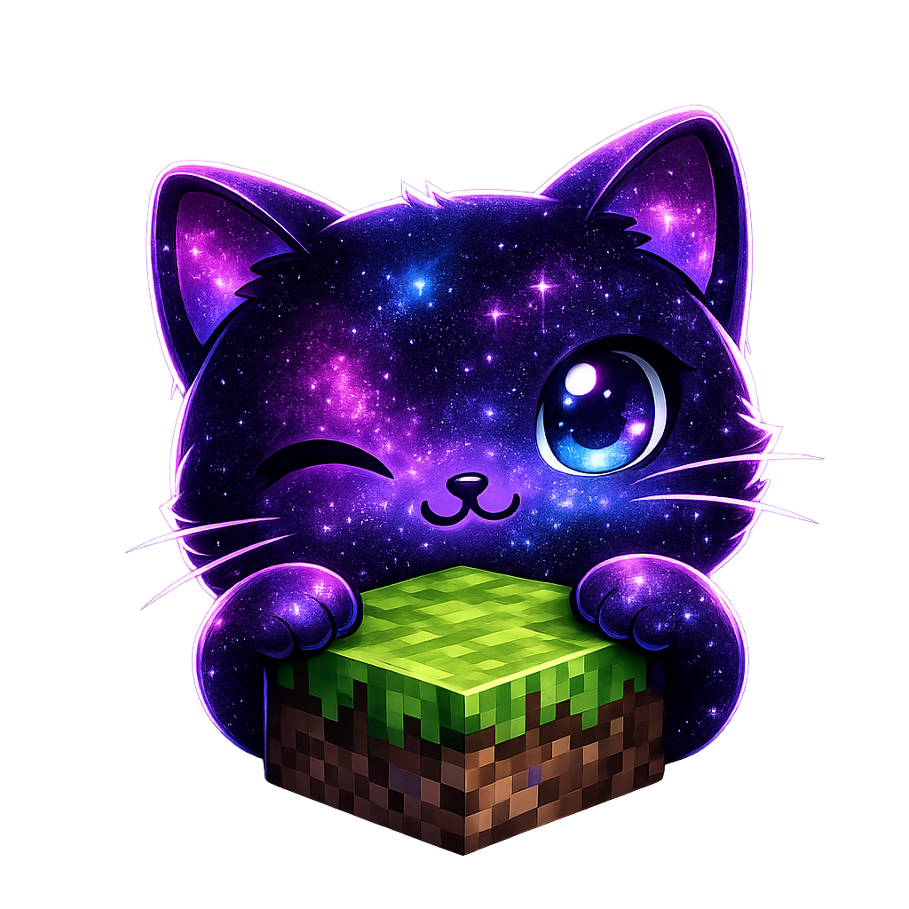

Perfiles completamente aislados
Cada perfil guarda su propia versión, loader, mods, mundos, RAM, resolución y argumentos JVM.
Survival Quilt1.21
Modpack CósmicoFabric
Forge AdventureForge

Kat LauncherKatLauncher 1.7.1 reúne perfiles aislados, Kat Social, KatCraft, trofeos, capturas, skins y mods en una experiencia completamente personalizable.
KatLauncher convierte el launcher en una experiencia social, personalizable y conectada con el juego.
| Funciones | KatLauncher | TLauncher | SKlauncher4.0 beta | Crystal Launcher | Prism Launcher | Modrinth App | ATLauncher | CurseForge |
|---|---|---|---|---|---|---|---|---|
| Cuenta local sin login previo | Sí | Sí | Sí | Sí | Sin confirmar | Sin confirmar | Sin confirmar | Sin confirmar |
| Instancias y perfiles separados | Sí | Parcial | Sí | Sí | Sí | Sí | Sí | Sí |
| Gestión e instalación de mods | Sí | Sí | Sí | Parcial | Sí | Sí | Sí | Sí |
| Instalación de modpacks | Sí | Sí | Sin confirmar | Sí | Sí | Sí | Sí | Sí |
| Chat global, amigos y mensajes privados | Sí | Sin confirmar | Sin confirmar | Sin confirmar | Sin confirmar | Sin confirmar | Sin confirmar | Sin confirmar |
| KatCraft e invitaciones dentro del juego | Sí | Sin confirmar | Sin confirmar | Sin confirmar | Sin confirmar | Sin confirmar | Sin confirmar | Sin confirmar |
| Mascotas KatPlus 3D y corona opcional | Sí | Sin confirmar | Sin confirmar | Sin confirmar | Sin confirmar | Sin confirmar | Sin confirmar | Sin confirmar |
| Temas o personalización del launcher | Sí | Sin confirmar | Sin confirmar | Parcial | Sí | Sin confirmar | Sin confirmar | Sí |
Revisada el 7 de octubre de 2026 con fuentes oficiales enlazadas en cada launcher. “Parcial” indica soporte relacionado o limitado; “Sin confirmar” significa que las fuentes consultadas no acreditan la función, no que sea imposible. SKlauncher incluye su beta 4.0. KatPlus requiere KatCraft; Mobile continúa en alpha.
Funciones potentes con una interfaz clara. Cero caos, puro bloque.
Cada perfil guarda su propia versión, loader, mods, mundos, RAM, resolución y argumentos JVM.
Busca e instala mods compatibles con la versión y el loader del perfil activo.
Instala packs de Modrinth o importa un archivo local como perfil independiente.
Guarda, previsualiza y activa skins PNG con instalación automática de CustomSkinLoader.
Comprueba assets, librerías y archivos de versión antes de iniciar y repara solo lo necesario.
Amigos, solicitudes, chat global, mensajes privados, publicaciones, perfiles y presencia en tiempo real.
Crea o descubre salas, administra la consola y consulta amigos, perfiles, trofeos y presencia desde el juego.
Rangos por tiempo jugado, galería de screenshots, sonidos, easter eggs y cuatro interfaces seleccionables.
Cada perfil puede usar su propia versión de Minecraft y su propio modloader. Kat Launcher mantiene las instancias separadas para que los mods y configuraciones no se mezclen.
Elige entre XMBKat, Epic, Kat Modern y Kat Normal. Cambia el color de acento, idioma, Java, memoria y resolución desde un solo lugar.
Ver características →Prueba trajes, capas, coronas, alas, auras y mascotas sobre tu jugador real, sin guardar hasta que estés listo.
Trajes Kat y Wither · Capas reales · Gorros festivos · Alas animadas · Auras de mobs · Nuevas mascotas
Colección KatPlus · Requiere KatCraft · Las capas Mojang dependen de las que posea tu cuenta
Explorar Wardrobe 1.7.1Pollito, mini Wither y Among Us: una mascota 3D a tu lado, con combate opcional para defenderte y ayudarte cuando atacas.
KatLauncher es gratis. Si te gusta el proyecto y quieres apoyar su desarrollo, puedes hacerlo directamente a través de Ko-fi.
Instalador oficial para Windows 10 y Windows 11.
Descargar KatLauncher Mobile · 0.4.1
Android 5+ · Minecraft Java, cuentas locales, skins, catálogo Modrinth, modpacks, Wardrobe y KatSocial con Google.
Versión alpha: la compatibilidad y el rendimiento dependen del dispositivo.